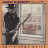
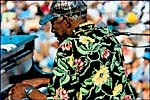
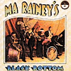

В цикле "Золото Блюзовой Фонотеки" - альбом Джимми Текери "Мотель пустых объятий", один из блюзовых бестселлеров 1992г.
Передача вышла в эфир 11 ноябре 1998г.

В цикле "Золото Блюзовой Фонотеки" - CD-альбомы Чарлза Брауна, вернувшие его имя в Большой блюз в начале 90-х:
"All My Life" и "Driftin': The Best Of Charles Brown. 1948-1956 Recordings".
Передача вышла в эфир в феврале 1999г.

В цикле "Золото Блюзовой Фонотеки" - альбом Джеймса Коттона "Лучшие из записей на фирме "Верв". Записи 1967-1968гг., переиздание 1995 года.
Передача вышла в эфир в ноябре 1998г.

В цикле "Золото Блюзовой Фонотеки" - альбом "Только один вечер", записанный в декабре 1979 года в токийском театре "Будокан" неторопливым Эриком Клэптон. "Слабое здоровье" и "ощущение себя чужаком", похоже, помогло Клэптону прочувствовать хороший блюз.
Передача вышла в эфир в октябре 1998г.

В цикле "Золото Блюзовой Фонотеки" - альбом "Черная задница Ма Рейни"... Это архиклассика классического блюза!
Передача вышла в эфир в апреле 2000г.
Записи Мадди
Уотерса и Джимми Ди.Лейна (сына Джимми
Роджерса) обрамляют субъективный
анализ альбома Эрика Сардинаса 1999 года.
Главный вопрос: насколько блюз может
быть тяжел?
Передача вышла в эфир в феврале 2000г.
Группа в своей лучшей форме за
многие десятилетия. Рассказ об альбоме
"BOOGIE 2000" дополнен кратким
экскурсом в историю и предысторию
группы, проиллюстрирован записями
архаичного блюза, которые оказали
значительное влияние на "Кэннд Хит".
Передача вышла в эфир в январе 2000г.